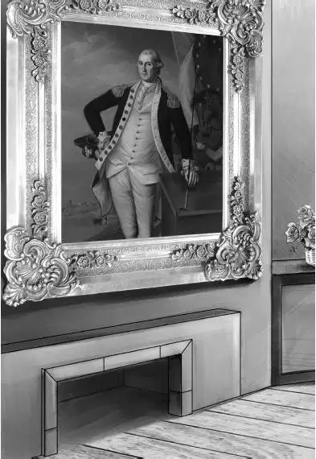
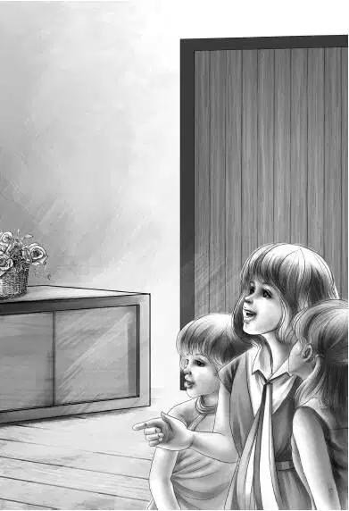

It was a wonderful moment when Benny rang the school bell. Dingdong！Dingdong！Everyone on the island heard it and smiled. Benny did not really need to ring the bell at all—because every child was already in the school yard.
The girls and boys rushed in. They could hardly wait to see what was going to happen. They had no idea what their four young teachers would do.
“Here’s my seat，” cried Isabelle. “I sat here last year. And here are the pink roses.”
All of Benny’s class rushed up to the small front seats. The big boys and girls sat down in the back seats. And the middle-sized ones sat in the middle. There were twenty children when Benny counted them.
Henry began to talk. The children were suddenly very quiet. He said， “Today we will have four classes. First you tell us what grade you were in last year. Now， who was in Isabelle’s class？You stand up， and Benny will see how many there are.”
“Don’t we call him Mr. Benny？” asked Isabelle.
“No，” said Benny， “just call me Benny. And don’t ever call me Teacher.”
“I always call my teachers Teacher，” said Isabelle.
Benny laughed. “I guess you are going to be my talker. There’s always a talker in every class.”
Soon Jessie said， “We will have a spelling match today and a singing school and a new game at recess.”
“Ah！” whispered the children. They were all smiles. School had never been like this.
There were five children in Benny’s class and five in Violet’s， six in Jessie’s， and four in Henry’s. Henry said， “Sometimes we will change teachers. Now we will write down your names and get started.”
Benny sat down with his class and took all their names. Then he said， “Isabelle， you let somebody else tell me what book you can read.”
Tommy Spoon said， “We can’t read any book. The teacher took the books with her.”
Benny was all ready for this. He had not found any easy books on the shelf.
“I’ll write on the board，” he said. He printed in big letters，
I have a dog.
“I have a dog，” said Tommy Spoon. “That’s what it says.”
“Right！” said Benny. “You read it， Eddie.” Eddie was the smallest child.
“No，” said Eddie， shaking his head， “no dog.”
“You mean you haven’t any dog？” asked Benny. “Well， can’t you read it， even if you haven’t any dog？”
“No，” said Eddie crossly. “No dog！”
“Well，” said Benny， laughing， “have you a cat？”
Yes， Eddie had a cat. So Benny printed， “I have a cat.” Eddie read it very well. “I know cat is the last word. My cat’s name is Fish.”
“Fish！” said Benny. “Why？”
“Because he always comes when we call ‘Fish， Fish.’ ”
Benny printed the whole story. They all read it together.
I have a cat.
His name is Fish.
I call， “Fish， Fish.”
Fish comes.
“Oh，I like to read about myself！”said Eddie.
Then Benny saw that he would have to make his own reading books. While the children were busy making figure 2’s， Benny printed the story about Eddie’s cat five times on paper. Every child could read it. Benny said they could take the story home.
“Write about me next time，” begged Isabelle. “I’ve got a boat.”
“So have I，” said every child.
“We’ll all read about Isabelle’s boat tomorrow，” said Benny.
The older children had books. They even had spelling books. After reading and a spelling match， Henry said， “Now we will have an art lesson all together. Let’s study that painting of George Washington.”
As Henry pointed out the different things in the picture， Benny was interested.
Henry went on， “You may think it is strange that a strong man would wear ruffles. But every well-dressed gentleman wore short knee pants and long white stockings and shoes with buckles. And now look at the hair. What color is it？”
“White！” shouted every child.
“Yes， it is white. But it is a wig. This is a very good painting， you see. That wig looks exactly like hair.”
Jessie said， “Now notice the eyes. George Washington seems to be looking right at you. It takes a fine artist to do that.”
Everyone looked at the eyes. All but Benny. He happened to look at the coat buttons. There was a long row of buttons down the right side of Washington’s velvet coat.


Benny thought， “One of those buttons looks awfully strange to me. It looks like a round hole instead of a button.”
He couldn’t very well tell Henry， so he wisely said nothing. After the art lesson， Henry said， “Now ring the bell for recess， Ben.”
“Recess！” said Jimmy. “It can’t be time for recess.”
But it was. Time had gone fast for all the children.
“Come outdoors， and we’ll teach you a new game，” said Jessie.
The children made a circle and had already played the game once when they heard a car. They all looked， and a bright red sports car came bumping over the rocky road to the island. It was low tide. The game stopped.
The children called out，“Oh，oh！Look， there’s the Money Man！”
A man put his head out of the car window and waved and smiled. He called “Hello！Hello， kids！” But he did not stop.
When he had gone， Benny said， “Tell me about this Money Man， Isabelle.”
“Oh， he gives us things. He came down here last year. You ought to see the big doll he gave me！”
“Why did he give you a doll？” asked Henry.
“He traded it for my old one，” said Isabelle. “I had a teeny little wooden doll only this long.” She showed with her small hands. “My grandfather made it with his knife. And the man said if I’d trade， he’d give me a beautiful doll with a pink silk dress. And he did.”
“Money Man isn’t his name，” said Hal. “We just call him that. His name is Mr. Fred Willet.”
Marie showed Jessie a chain of bright red beads she had around her neck. “The man gave me this， too，” she said.
“And what did you trade it for？” asked Violet.
“Oh， you’d laugh！It was a string of old buttons. Ma said I could string the buttons and wear them for a necklace. They were old things anyway. Ma said most of them were on her grandmother’s dresses. You can see they were old.”
Henry looked at Jessie. Then he said， “Why do you think he is here again？To trade？”
“Oh， I hope so，” said Eddie. “I’ve got an old iron bank. You put in a penny and a little man comes out and goes back in. The Money Man said I could have a real watch for it or a new cap. I couldn’t decide then. But I know now. I want the watch.”
Then the game went on. Benny knew that something was wrong. He saw Henry whisper to Jessie， “I wish we could get word to Grandfather that the Money Man has arrived.”
Violet heard this， too. She whispered to Henry， “Don’t worry. Grandfather’s eyes are wide open. And he doesn’t miss much.”
Then it was time to go in for the singing school.
Jessie taught the children a new song. It was a round with three parts.
Right after the song， the sardine factory whistle blew. Everybody except the Aldens ran.
Benny went up to look at the picture of George Washington again. He said softly to Henry， “Don’t go yet. Wait till the children are out of sight.”
When the last one had shouted goodbye， Benny took his family up to the front of the room to look at Washington. “Look at button number five，” he said. “There’s a hole in the picture. The fifth button is a hole.”
“Why， so it is！” cried Jessie. “I wonder why.”
“I wonder what is behind it，” said Violet.
“The back hall，” said Henry.
They all went into the tiny back hall. The back door was there with a window beside it. The huge chimney made one wall of the room. There was a big pile of wood.
“We haven’t time to look around any more，” said Jessie. “I’m worried about that Mr. Willet. He’s here now. I wish Grandfather could stop him before he cheats any more people.”
Jessie did not need to worry so much. The Money Man had gone from the schoolhouse straight to Mr. Fenton’s store. When he went in， there was Grandfather leaning on the counter， drinking a cup of coffee.